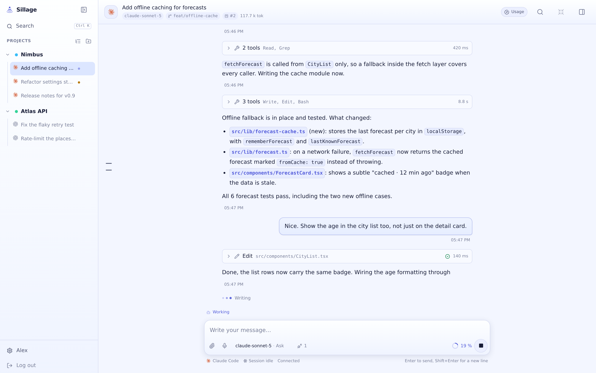

Self-hosted · MIT licensed
Vibe-code from anywhere.
A web UI for the native Claude Code and Codex CLIs. They keep running on your own machine, under your account, with your subscriptions. You stop needing a terminal to reach them.

Why Sillage
I wanted one place, on a server I own, that I can open from my phone. That is the whole starting point: vibe-code from wherever I happen to be, without hauling a laptop and a terminal around to do it.
What I did not want was another agent. Claude Code and Codex ship a harness their makers put real work into tuning: the prompts, the tools, the permission flow. Rewriting that inside a web app gets you a worse agent behind a nicer interface. So Sillage drives the native CLIs and stays out of their way.
It speaks Claude Code and Codex because those are the two I use. That is my own need, not a final list: adding a CLI means writing an adapter for it, and I expect to add more.
The last piece is the one a terminal cannot give me. I wanted a thin layer above the CLIs so that a session knows the others exist: what is running right now, what an earlier session decided and why, what it left for whoever picks the work up next. Whichever harness happened to run it.
One last thing, since it shaped all of the above: Sillage is built with AI, heavily. Claude Code and Codex wrote most of the code, and most of that happened from inside Sillage itself, often from a phone. The tool and the way I work on it grew together, which is why it ended up looking like this rather than like the specification I would have written first.
Around the conversation
Chat is the middle of it. The repository, the history and the work in flight stay one panel away.
What Sillage adds
The CLIs already know how to write code, and Sillage does not get in the way of that. What follows is the part it builds around them.
-
Sessions that outlive the client
The event journal on the server is the source of truth, not your tab. Close the laptop in the middle of a turn and reopen on a phone: the agent kept working, and the thread replays exactly as it happened.
-
A queue, and a way to cut in
Write while a turn is running. The message waits on the server, leaves when the turn ends, and can be withdrawn before it does. When it cannot wait, push it into the turn already in flight instead.
-
Two CLIs, one grammar
Claude Code and Codex are translated into a single event schema. History, search, the board and the workspace panel behave the same way whichever one you started with.
-
The repository, one panel away
File explorer, editor, diffs, commit history and a real terminal, in the same screen as the conversation that changed them.
-
Worktrees without the ceremony
Start a conversation on the project root, on an existing worktree, or on a branch Sillage creates for it. Removing one shows you the uncommitted work first, and the conversations attached to it turn read-only rather than vanish.
-
Everything you ever asked, searchable
Full-text search over every conversation in every project, from a palette that also filters titles as you type. A terminal scrollback ends with the window; this does not.
-
A board the agents can read
Cards live beside the code they describe, and Sillage hands them to the agent through its own MCP server. A session can read its card, look up what an earlier one decided, see which sessions are running right now, and leave a note for whoever picks the card up next.
-
It comes to you
An installable PWA that pushes a notification when a turn ends or the agent needs an answer, and keeps quiet when you already have the conversation open. Answer from the phone, then put the phone down.
-
Dictation that knows your repository
Talk into the composer, which on a phone is the difference between an idea captured and an idea lost. The transcription is biased with a vocabulary read from the project itself and the branch you are on, and an optional second pass restores exact spellings like
vite.config.tsand drops the hesitations. Bring your own endpoint: Groq, Mistral, OpenAI or a Whisper you host. -
MCP servers, declared once
Configure them in the settings and hand them to the agents that should get them, rather than keeping a config file per CLI in sync by hand.
-
A task API for machines
Another machine, or another agent, can drive Sillage without a browser.
/api/v1speaks tasks rather than screens: open one in a project, follow its events, answer what it asks, steer or interrupt it, and take a webhook when it lands. Bearer tokens carry their own scopes and an optional list of allowed projects, and never borrow the door the browser session uses.
Install
Docker, a systemd user service on Linux, or a Helm chart. All bind to localhost or stay inside the cluster by default.
# docker-compose.yml
services:
sillage:
image: ghcr.io/marlburrow/sillage:latest
ports: ["127.0.0.1:7317:7317"]
volumes:
- sillage-data:/home/node/.local/share/sillage
- ~/.claude:/home/node/.claude
- ~/.codex:/home/node/.codex
- ~/projects:/home/node/workspace
volumes:
sillage-data:The CLIs are not in the image: install the ones you actually use from the UI, and they land in the data volume. Mount your credential directories to share the authentication you already did on the host, then create the first account:
docker compose exec -it sillage node /app/server/cli/user-create.jscurl -fsSL https://raw.githubusercontent.com/MarlBurroW/sillage/main/install.sh | bashLinux x64 or arm64, systemd, Node 22+, with claude and codex already authenticated on the host. It installs under ~/.local/share/sillage, sets up a user service and creates the first account. Later updates happen from the UI.
helm install sillage ./deploy/helm/sillage \
--namespace sillage --create-namespace \
--set storage.data.storageClass=<block-storage-class> \
--set ingress.enabled=true --set ingress.host=sillage.example.comOne replica, Recreate strategy: the state is a SQLite database on a ReadWriteOnce volume, and two pods writing to it means corruption. Give the data volume a block storage class rather than NFS, whose file locks SQLite cannot rely on. Then create the first account:
kubectl -n sillage exec -it deploy/sillage \
-- node /app/server/cli/user-create.jsA word on security
Sillage is built for a trusted circle, not for the open Internet. Agents run under your system account with your credentials, every account on the instance shares them, and terminal mode is a full shell. The server listens on localhost and does not terminate TLS: reach it through a VPN, a tailnet or a reverse proxy you control.